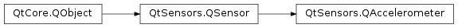

QAccelerometer¶
Synopsis¶
Functions¶
- def
accelerationMode() - def
setAccelerationMode(accelerationMode)
Signals¶
- def
accelerationModeChanged(accelerationMode)
Detailed Description¶
The
PySide2.QtSensors.QAccelerometerclass is a convenience wrapper aroundPySide2.QtSensors.QSensor.The only behavioural difference is that this class sets the type properly.
It also supports changing the acceleration mode, which controls whether the force of gravity is included in the accelerometer values or not.
Furthermore, this class features a
PySide2.QtSensors.QAccelerometer.reading()function that returns aPySide2.QtSensors.QAccelerometerReadinginstead of aPySide2.QtSensors.QSensorReading.For details about how the sensor works, see
PySide2.QtSensors.QAccelerometerReading.
-
class
PySide2.QtSensors.QAccelerometer([parent=Q_NULLPTR])¶ Parameters: parent – PySide2.QtCore.QObjectConstruct the sensor as a child of
parent.
-
PySide2.QtSensors.QAccelerometer.AccelerationMode¶ This enum represents the acceleration mode of an acceleration sensor.
The acceleration mode controls how the sensor reports acceleration. is the only mode in which the values can be directly physically measured, the others are an approximation.
Constant Description QAccelerometer.Combined Both the acceleration caused by gravity and the acceleration caused by the user moving the device is reported combined. QAccelerometer.Gravity Only the acceleration caused by gravity is reported. Movements of the device caused by the user have no effect other than changing the direction when the device is rotated. QAccelerometer.User Only the acceleration caused by the user moving the device is reported, the effect of gravity is canceled out. A device at rest therefore should report values of, or close to, zero. In other APIs, this mode might be known as linear acceleration. See also
-
PySide2.QtSensors.QAccelerometer.type¶
-
PySide2.QtSensors.QAccelerometer.accelerationMode()¶ Return type: PySide2.QtSensors.QAccelerometer.AccelerationMode
-
PySide2.QtSensors.QAccelerometer.accelerationModeChanged(accelerationMode)¶ Parameters: accelerationMode – PySide2.QtSensors.QAccelerometer.AccelerationMode
-
PySide2.QtSensors.QAccelerometer.setAccelerationMode(accelerationMode)¶ Parameters: accelerationMode – PySide2.QtSensors.QAccelerometer.AccelerationModeSets the acceleration mode to
accelerationMode.
© 2018 The Qt Company Ltd. Documentation contributions included herein are the copyrights of their respective owners. The documentation provided herein is licensed under the terms of the GNU Free Documentation License version 1.3 as published by the Free Software Foundation. Qt and respective logos are trademarks of The Qt Company Ltd. in Finland and/or other countries worldwide. All other trademarks are property of their respective owners.